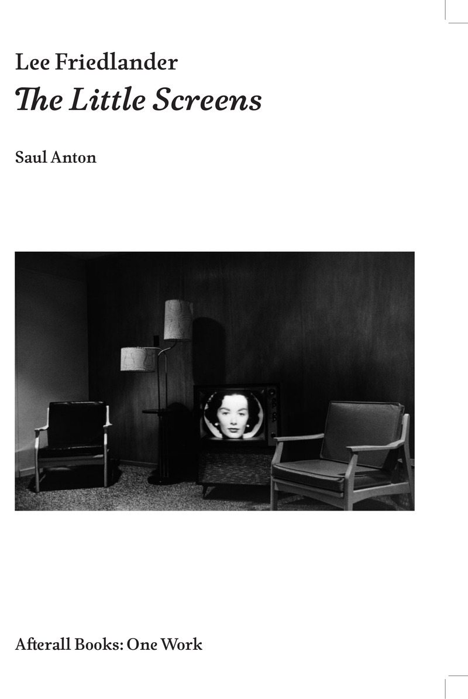
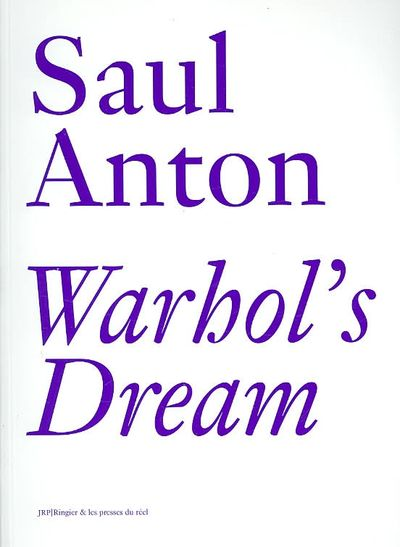

Saul Anton
Writing
Teaching
About
Recent and Upcoming
February 27, 2026
"The Double Aspect of the Vampire: Nosferatu, Cinema, and the Final 'Final Girl'"
American Comparative Literature Association, Montreal
April 10, 2026
"Babbling Cosmopolitanism: Diderot's Home Invasion of Russia"
American Society for Eighteenth-Century Studies, Philadelphia
March 2026
"The Monster's Monster"
Brooklyn Rail
2026
"Babbling Cosmopolitanism: Commerce and the Ruins of Sovereignty in Diderot's
Mélanges pour Catherine II
"
Diderot Studies, No. 43, ed. Andrew Curran
June 2025
"Kissing Sovereignty: The Telepathetic Friendship of Jacques Derrida and Jean-Luc Nancy"
American Comparative Literature Association
2024
"Diderot's Anarcheological Museum"
In
Diderot et l'archéologie
, eds. Falaky, Hakim, and Baumer (Paris: Classiques Garnier)
April 2024
"Hubert Robert: Afterimages of Absolutism"
American Society for Eighteenth-Century Studies
2022
"Rousseau's Shameless Beginnings"
Parallax
, Vol. 28, No. 3, pp. 291–303
Books

Lee Friedlander's Little Screens
Afterall Books / MIT Press, 2015

Warhol's Dream
Les presses du réel, 2007
Roxy Paine: Dioramas
Skira, 2021